Sub-Zero & Wolf specialists · Los Angeles · Open daily, 7am to 7pm
Factory trained specialists, 27 years deep in Sub-Zero and Wolf, and still glad to take the call. Genuine parts on the truck, a 3 year guarantee in writing, and an $89 diagnostic that comes off your repair.
Warm refrigerator? Say so when you call. Those go first.
The Noble Promise
One written number before work begins. It does not move.
Here is how a Noble repair is priced. After the diagnosis, you get one written quote to fix the problem you called about, completely. Approve it, and that number is settled. Not a starting point. Not an estimate that grows in the parking lot.
If the job turns out harder than it looked from the outside, if it needs another part, another hour, or a second visit to finish right, the price stays where we set it. Hard jobs are ours to carry. That is what a quote means here.
And if we notice something unrelated while we work, we show you, explain it, and quote it on its own. Nothing lands on your bill that you did not ask us to fix.
Every repair is backed by our 3 year parts and labor guarantee, in writing.
A loaded refrigerator holds hundreds of dollars of groceries, and a wine column can hold a whole lot more. Spoilage starts quietly, hours in.
A struggling unit runs flat out to compensate. That is exactly how a fixable fault turns into a compressor replacement, the most expensive repair there is.
Leaks travel under cabinetry before they surface. Hardwood and subfloors pay for every day a slow drip goes unfound.
The cheapest moment to fix an appliance is the moment it first misbehaves. Call while it is still the small version of the problem.
Stay at anything that long and one of two things happens. You get exceptionally good, or you find other work. We stayed. And these machines, built like nothing else in the home, genuinely need people who did.
Sub-Zero
Refrigeration, freezers, and wine storage. Sealed system work, ice systems, door seals, and error codes, all brought back to factory spec.
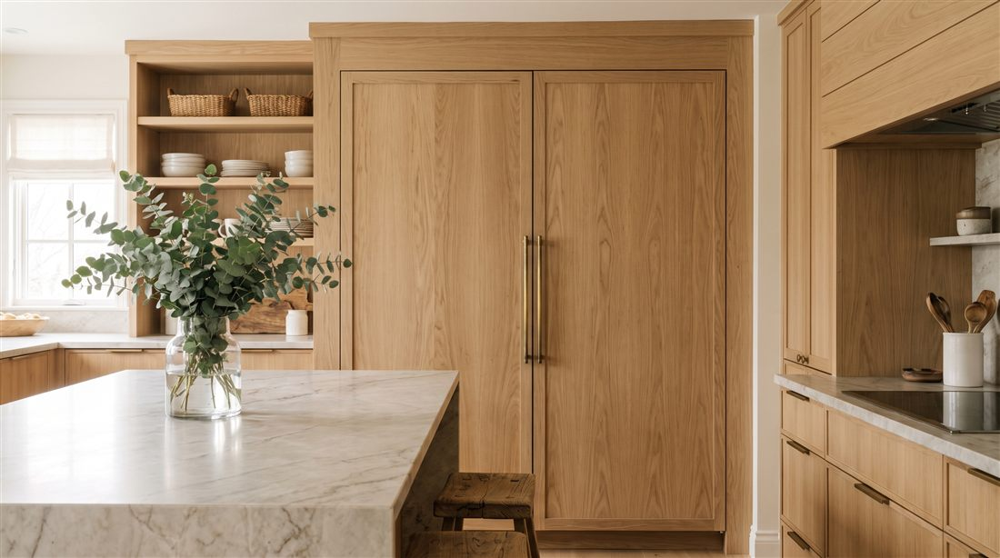
Wolf
Ranges, cooktops, and wall ovens. Ignition, calibration, convection, and controls, tuned by certified hands.
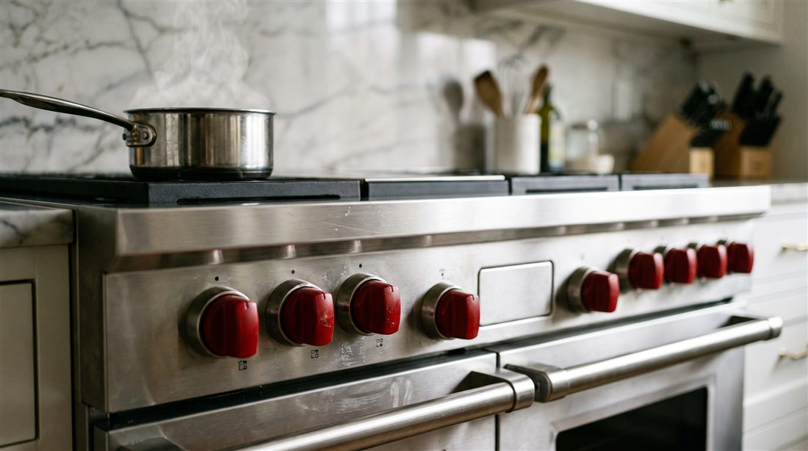
A few of the rooms Noble looks after, from Bel Air wine walls to Manhattan Beach baking stations.
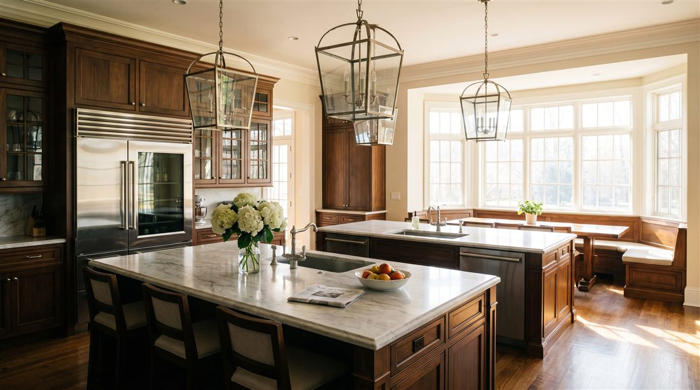
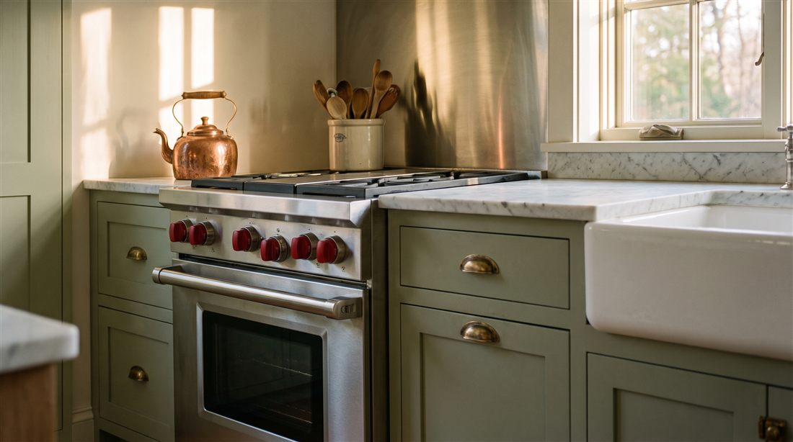
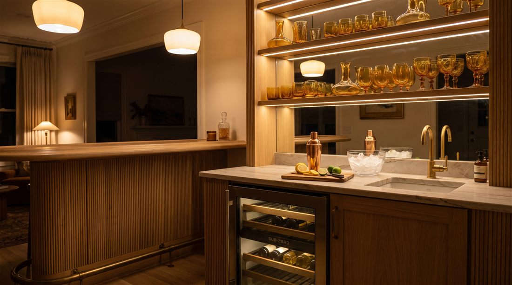
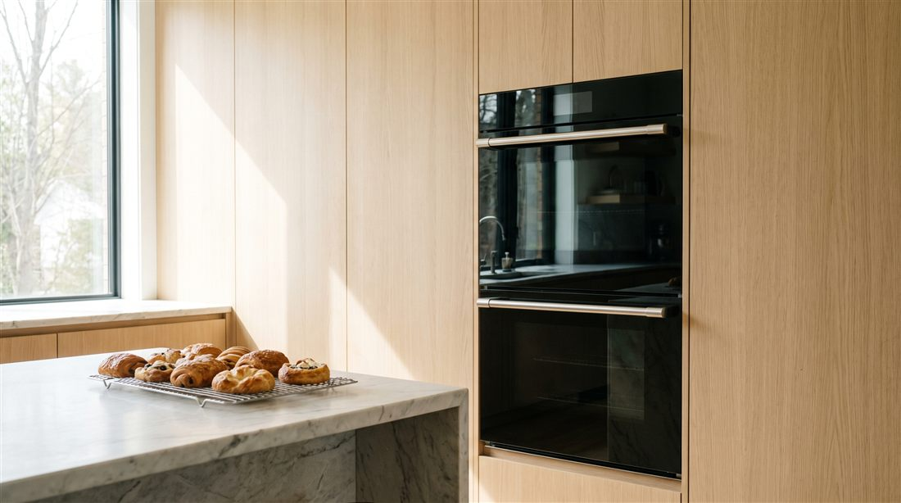
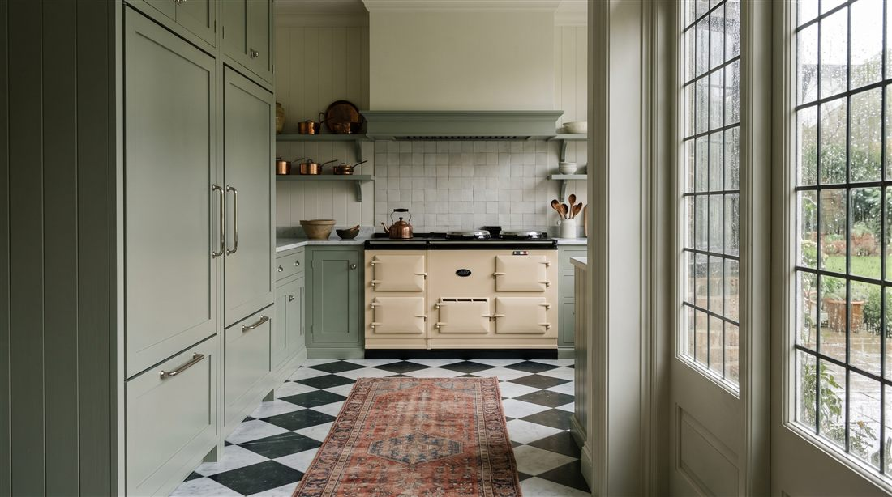
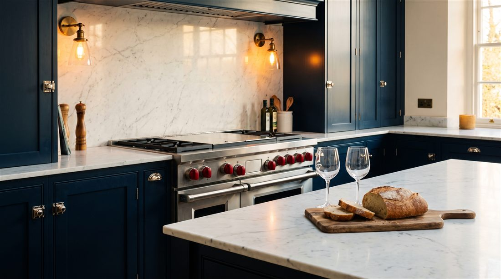
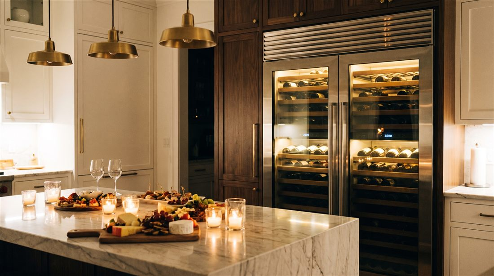
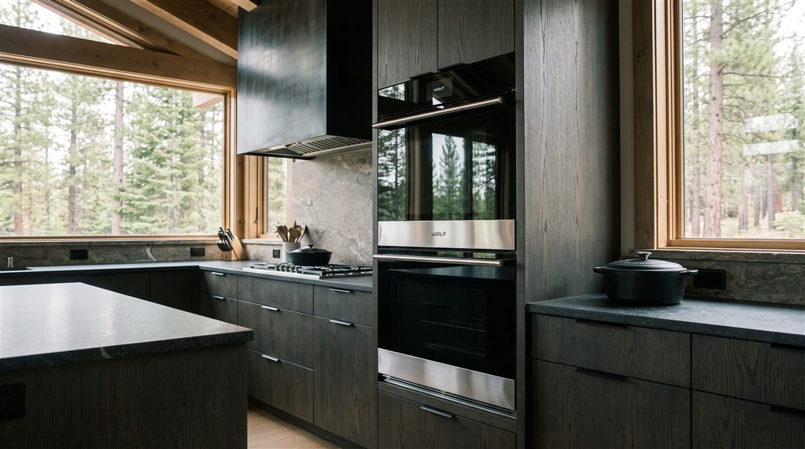
Six commitments, kept gladly on every visit.
Every Noble tech certifies on current Sub-Zero and Wolf platforms, and recertifies every year. Not once a decade.
Real factory components, sourced through authorized channels, stocked on the truck so most repairs finish on the first visit.
Parts and labor, in writing. If our repair fails within three years, we come back and make it right.
Floor runners, shoe covers, padding on every panel we touch. And before we leave, we clean up, walk you through the repair, and answer every question. Your kitchen looks untouched. You feel taken care of.
$89, quoted up front, credited toward the repair. You approve the number before any work begins.
Open daily 7am to 7pm, with same day priority for refrigerators that have gone warm. When your kitchen needs us, we genuinely want to be there.
A factory trained tech tests the system with instruments, not guesses, then walks you through the findings in plain language.
One written number, approved by you before a single panel comes off. The $89 diagnostic is credited toward it.
Factory components from the truck whenever possible. Most repairs finish the same visit, floors protected the whole time.
Three years on parts and labor, documented. If it fails, we return. That is the whole policy.
We removed every reason to wait.
$89, quoted before we book, credited in full toward your repair. Approve the fix and the diagnostic ends up costing you nothing.
One written quote before a single panel comes off. No surprise line items, no “while we were in there.” You stay in control.
If our repair fails within 3 years, we come back and make it right. Parts and labor. We can promise that because of how we repair.
The kitchen is where a home actually lives. Birthdays, holidays, Tuesday dinners. Noble exists to keep that room working, beautifully, for the families who built their homes around it. We love this craft, we are very good at it, and going above and beyond is just how we practice it. The repairs are how. Helping you is why.
For refrigeration emergencies, a warm Sub-Zero or an active leak, we hold same day and next morning slots across our service area, seven days a week. Standard appointments usually land within the week.
A background checked, factory trained Noble tech in uniform. Not a subcontractor, not a stranger from an app. You get a name and a photo before the truck arrives.
Only. Factory parts through authorized channels, and the common ones ride on the truck so most repairs finish in one visit.
$89, flat, quoted before we book. It gets credited in full toward the repair when you go ahead. No trip fees stacked on top.
Three years on parts and labor, in writing. It is the longest guarantee we know of in this trade, and we can offer it because of how we repair.
Floor runners go down before toolboxes open. Shoe covers at the door, padding on every panel we touch. That is just how we work, not an upgrade.
We go the extra mile because we can't help it. Our clients notice, and their neighbors call.
“Our Sub-Zero stopped cooling on a Friday night with a full house arriving Saturday. Noble had a tech out by 9am and the unit cold by noon. I don’t know how they did it, and I don’t need to. They’re in my phone now.”
Homeowner, Beverly Hills“Third company we called about the ice maker. First one that actually fixed it. The tech explained exactly what failed, showed me the old valve, and the ice has been perfect since.”
Homeowner, Manhattan Beach“They serviced the Wolf range and both Sub-Zero columns in one visit, left the kitchen spotless, and sent a written report I forwarded straight to our house manager. This is how it should be done.”
Estate manager, MontecitoWherever the kitchen is worth protecting, Noble is already nearby.
Noble keeps standing relationships with estate managers, family offices, and property management firms across the Westside and beyond. That means documented service histories for every appliance under your care, certificates of insurance on request, techs cleared for gated communities, and invoicing that fits your accounting, not ours.
For portfolios of properties, ask about the Noble maintenance plan: scheduled condenser service, seal inspection, and calibration across every unit you manage, on a calendar you approve once a year.
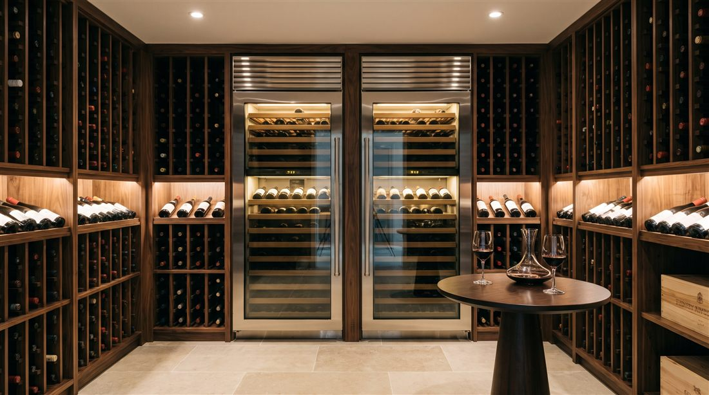
One call, and it is handled. Open daily, 7am to 7pm.
Same day slots are limited and go to the first callers. The diagnostic is credited toward your repair, so it costs you nothing to find out.